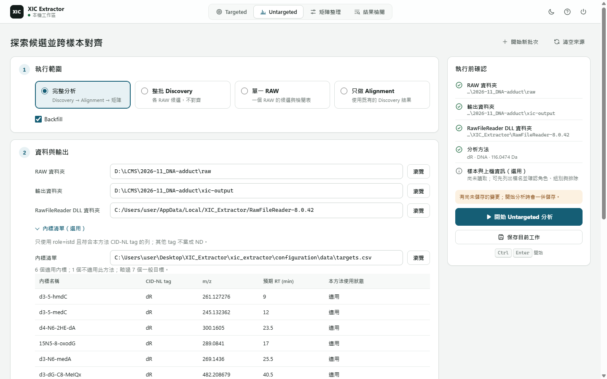

full
候選探索後，再做跨樣本 Alignment。
輸入：RAW 資料夾。
XIC Extractor · 探索特徵
當你沒有預先列好的目標清單，用 Untargeted Discovery 從 RAW 找候選特徵，依需要跨樣本對齊，並從 GUI 開啟可檢視的輸出。
01 · 跑一次探索
封裝版開啟 XIC_Extractor.exe；開發 checkout 可執行 uv run python -m gui.main。

進入探索工作區。
新批次通常選 full；單檔候選探索選 discovery_only；既有探索結果要重新對齊選 align_only。
指定 RAW 輸入、Thermo DLL 資料夾與輸出資料夾。
依檔名配對樣本與注射順序；檢查未配對或有歧義項目。字母順序不是注射順序。
預設選用隨附範例。流程只使用 is_istd=TRUE 列；其他 analyte 列會列為 skipped。
開「編輯方法…」選 dR、R、MeR 或 custom NL tags 與組合，將方法套用到本次執行。
確認設定完成後執行。
按問題選候選 CSV 或 Alignment matrix；GUI 預設呈現 matrix。
本機設定位置：GUI 將 Untargeted 設定存於 config/discovery_gui.json。這是機器本地狀態，應留在本機。
02 · 模式選擇
GUI 從 RAW 資料夾開始完整批次時選 full。若想對一整個資料夾只做 discovery-only batch，使用 CLI discovery workflow。
full候選探索後，再做跨樣本 Alignment。
輸入：RAW 資料夾。
discovery_only只檢查一個 RAW 檔案的候選特徵。
輸入：單一 RAW 檔案。
align_only拿既有 discovery 輸出做對齊。
輸入：RAW 資料夾與 discovery_batch_index.csv。
03 · 輸入與方法
Thermo 儀器資料，依選定模式進行探索或對齊。
包含 Thermo RawFileReader DLL 的資料夾。
候選與 Alignment artifacts 的寫入位置。
Word sequence table，供檔案／樣本配對及注射順序使用。
與 Targeted 共用的 targets CSV；Untargeted 只消費 is_istd=TRUE 列。
選定 CID-NL tags 與組合；進階覆寫可在本次執行中調整 preset 方法。
要換內標清單：複製隨附範例，於 Excel 或系統關聯程式編輯後在 GUI 重載；保留 CSV headers 與 is_istd 標記。沒有第二份 Untargeted 專用清單。
若提供的檔案沒有內標，GUI 會報錯；清空該欄位可不使用內標清單執行。
04 · 輸出與檢視
預設跨樣本量化輸出是 alignment_matrix.tsv；retained CID-NL 成功後另保存 cid_nl_explanation.sqlite 與 runtime marker。GUI 預設呈現 matrix；其他 review TSV、HTML、XLSX 需明確啟用。
feature 是列、sample 是欄，格內放 area；這是預設 Alignment 產物。
alignment_matrix.tsv| 輸出 | 內容 | 適合的檢視問題 |
|---|---|---|
discovery_candidates.csv | 各樣本候選特徵的 m/z、RT、area 與 seed evidence。 | 逐樣本檢查候選細節。 |
discovery_review.csv | 較精簡的候選欄位與 confidence。 | 快速分流檢視。 |
discovery_batch_index.csv | 連結每個樣本的 candidate / review CSV。 | Alignment 輸入；探索後自動產生。 |
alignment_matrix.tsv | 跨樣本對齊特徵與各格 area。 | 預設跨樣本量化結果。 |
cid_nl_explanation.sqlite | 已完成的 CID-NL 決策與曲線證據。 | 完成後手動 Export XIC Inspector，產生離線 HTML；不是自動產生的 gallery。 |
alignment_review.tsv | 對齊品質、owner 身分與每格 backfill 狀態。 | 明確啟用的 review / diagnostic 檢視。 |
| Review / gallery HTML | 候選峰與 backfill 脈絡的視覺圖。 | 明確啟用的人類檢視輸出。 |
05 · 常見問題
填齊畫面上每個路徑欄位，並確認檔案／資料夾實際存在。
把 DLL directory 指到 Thermo RawFileReader 安裝資料夾。
先確認主要 discovery / Alignment 輸出；gallery 產生屬於 best-effort。
選 align_only，並提供既有 discovery_batch_index.csv。
檢查 RAW 檔案是否有效，以及 DLL 版本是否與 Xcalibur 安裝相符。